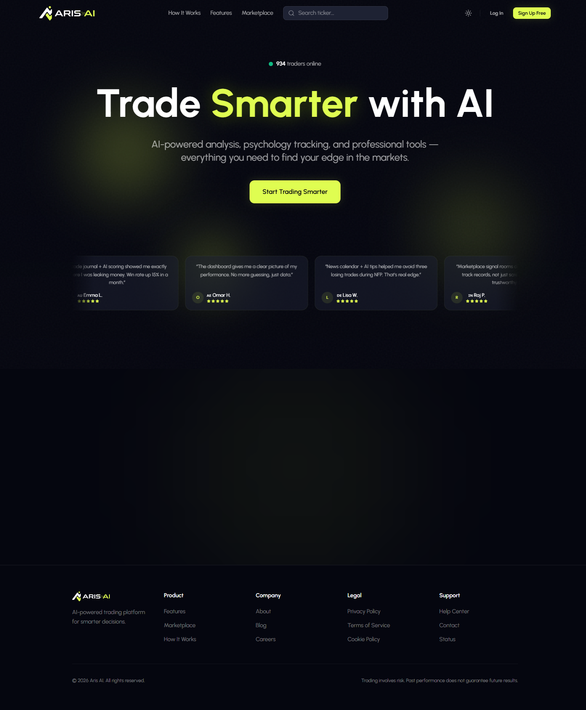
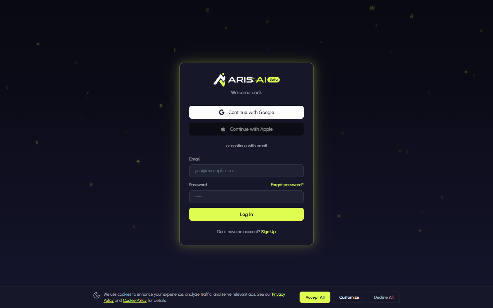

ArisAI
I joined this project 3 months in — my co-developer had started the backend while I was finishing my internship at Telecloud. Once I came onboard, I built ~80% of the frontend: trading dashboards, AI chat, signal rooms, content engine, and more. 15+ pages of complex, real-time UI.

Overview
ArisAI is a comprehensive trading platform designed for retail traders, signal providers, and influencers. It combines AI-powered analysis with real-time trading tools — an ecosystem for education, analysis, and community.
I joined the project about 3 months after my co-developer had started building the NestJS backend. I'd been finishing my internship at Telecloud Vision in Beirut. Once I came onboard, I took ownership of the frontend: architecting the component structure, building out 15+ pages, and implementing complex features like real-time WebSocket connections, AI chat with streaming responses, and data-dense trading dashboards.
The platform is a monorepo — React web app, Next.js landing page, Expo mobile app, and a Remotion video generator. I built approximately 80% of the frontend across these packages. This project pushed me to solve real performance problems with memoization, lazy loading, and optimized rendering for live trading data.
What I Built

AI Chat with Claude
Built the full chat interface with streaming responses from Anthropic's Claude. Conversation history, token usage tracking, and a responsive UI that handles long-running AI responses gracefully. My first time working with LLM APIs in production.
Trading Dashboard & Charts
The most technically challenging page. Lightweight Charts with real-time data feeds, drawing tools, technical indicators, and forecasting overlays. Had to solve serious performance issues with memoization and careful re-render management when live data updates hundreds of times per second.
Real-Time Signal Rooms
WebSocket-powered rooms where signal providers broadcast live trade calls. I built the entire room UI — entry/exit updates in real-time, subscription management, provider performance stats, and the room creation flow for signal providers.
Trade Journal & AI Analysis
Full CRUD for trade logging with screenshot uploads to S3. Built analytics views showing win rate, average R, P&L by pair and session. The AI analysis feature uses Claude to review a trader's journal and identify behavioral patterns.

Marketplace, Courses, Tournaments & Podcasts
Built the marketplace for browsing signal rooms and courses with Stripe-powered subscriptions. Created the tournament system with live leaderboards. Integrated Amazon IVS for live podcast streaming. Also built the content engine for AI-generated social media posts.
Stack
Next Project